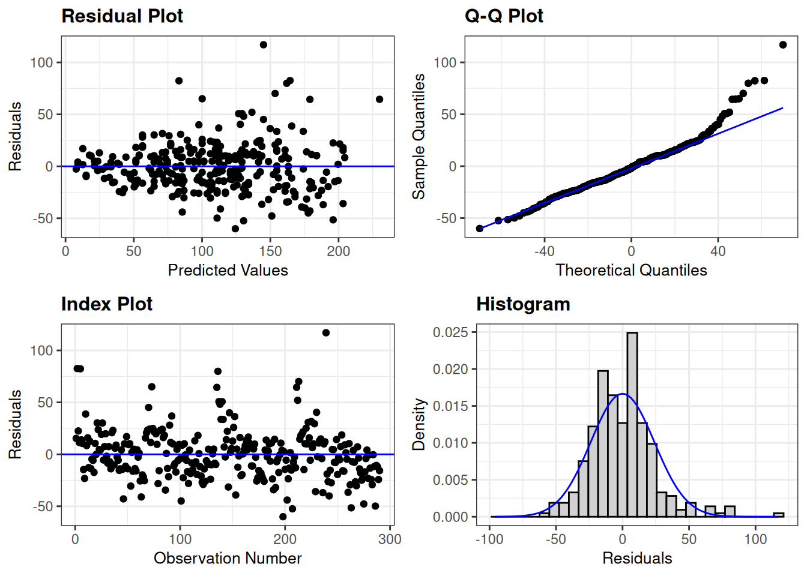
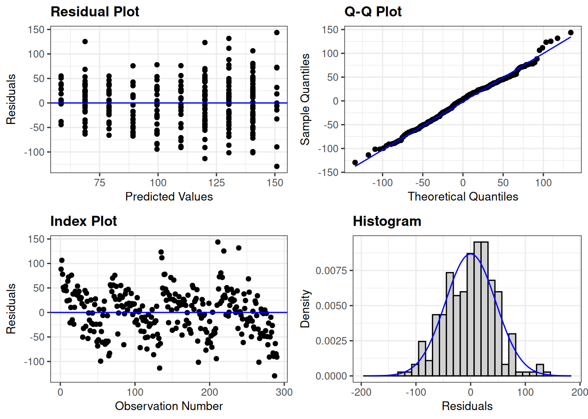

# Age
ggplot(nfl, aes(Age))+
geom_histogram(bins = 15)# favstats(~Age, data = nfl)
age_model <- lm(FanPt ~ Age, nfl)
resid_panel(age_model)# Games Played
ggplot(nfl, aes(GamesPlayed))+
geom_histogram(bins = 15)# favstats(~GamesPlayed, data = nfl)
G_model <- lm(FanPt ~GamesPlayed, nfl)
resid_panel(G_model)# BMI
ggplot(nfl, aes(BMI))+
geom_histogram(bins = 15)
# favstats(~BMI, data = nfl)
BMI_model <- lm(FanPt ~ BMI, nfl)
resid_panel(BMI_model)# Targets
ggplot(nfl, aes(NumTargets))+
geom_histogram(bins = 15)
# favstats(~NumTargets, data = nfl)
Tgt_model <- lm(FanPt ~NumTargets, nfl)
resid_panel(Tgt_model)
# Receptions
ggplot(nfl, aes(NumReceptions))+
geom_histogram(bins = 15)# favstats(~NumReceptions, data = nfl)
Rec_model <- lm(FanPt ~ NumReceptions, nfl)
resid_panel(Rec_model)# Catch Percent
ggplot(nfl, aes(CatchPercent))+
geom_histogram(bins = 15)# favstats(~CatchPercent, data = nfl)
CatchPercent_model <- lm(FanPt ~ CatchPercent, nfl)
resid_panel(CatchPercent_model)# Games Started
ggplot(nfl, aes(GamesStarted))+
geom_histogram(bins = 15)# favstats(~GamesStarted, data = nfl)
GS_model <- lm(FanPt ~ GamesStarted, nfl)
resid_panel(GS_model)
# Player Weight
ggplot(nfl, aes(Weight))+
geom_histogram(bins = 15)# favstats(~Weight, data = nfl)
Wt_model <- lm(FanPt ~Weight, nfl)
resid_panel(Wt_model)# Player Height
ggplot(nfl, aes(HeightInch))+
geom_histogram(bins = 7)# favstats(~HeightInch, data = nfl)
HeightInch_model <- lm(FanPt ~ HeightInch, nfl)
resid_panel(HeightInch_model)# Player Position
ggplot(nfl, aes(Position))+
geom_bar()table(nfl$Position)
TE WR
98 192 prop.table(table(nfl$Position))
TE WR
0.337931 0.662069 # Fantasy Points
ggplot(nfl, aes(FanPtNextSeason)) +
geom_histogram()ggplot(nfl, aes(FanPtNextSeason)) +
geom_boxplot()# favstats(~FanPtNextSeason, data = nfl)